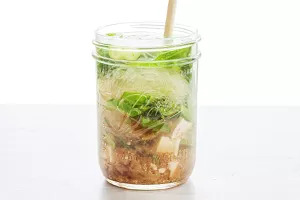

Easy Salads
Waldorf Salad
15 minutes

Rice Noodles
Homemade Cup Noodles
9 minutes

Quick Vegetarian
Chickpea Salad Sandwich
15 minutes

Salads
Asian Zucchini Noodle Salad
20 minutes

Crab Salads
Crab Salad with Pear and Hazelnuts
15 minutes

Easy Salads
Shrimp, Arugula, White Bean, Cherry Tomato Salad
20 minutes
Sandwiches
How to Make a Grilled Cheese Sandwich
10 minutes

Spinach Salads
Greek Salad in Jars
20 minutes